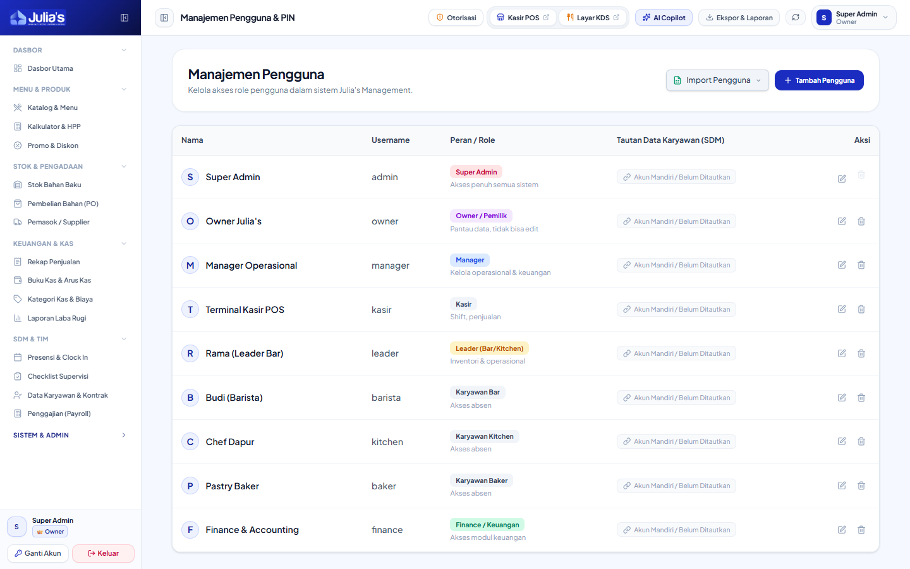

- Buka menu Manajemen Pengguna → Klik tombol "+ Tambah Pengguna".
- Isi Nama Lengkap dan Username Unik (misal:
budi_kasir).
- Tentukan Peran (Role) sesuai penugasan:
| Role |
Tingkat Akses |
Pengguna Ideal |
SUPER_ADMIN |
Akses Penuh Seluruh Sistem & Database |
IT Administrator / Pemilik Sistem |
OWNER |
Mode Pantau (View-Only) Laporan & Dasbor |
Pemilik Usaha / Investor |
MANAGER |
Operasional Toko, Inventori, Menu, Otorisasi PIN |
Store Manager / Asisten Manajer |
FINANCE |
Pembukuan Kas, PO Belanja, Payroll Gaji |
Staf Keuangan & Akunting |
LEADER |
Checklist Supervisi, Opname Stok, Resep |
Shift Leader / Supervisor Bar |
KASIR |
POS Kasir, Shift Drawer, Layar KDS |
Kasir Frontliner |
BAR / KITCHEN / BAKER |
Dasbor Karyawan & Presensi Selfie |
Barista, Koki Dapur, & Pembuat Roti |
- Tentukan Departemen:
BAR, KITCHEN, atau
MAIN (Gudang Utama).
- Tetapkan 4-Digit / 6-Digit PIN untuk login cepat di tablet POS.
- Hubungkan dengan data profil karyawan (*Employee Linking*) agar kehadiran dan jam shift tersinkron ke modul
Payroll.
- Klik "Simpan Pengguna".

Hierarki Pengguna: Super Admin dapat mengedit PIN, mengatur role, dan mengaktifkan/menonaktifkan akun staf outlet secara real-time.
Aturan Pengamanan Mantan Karyawan: Saat staf berhenti bekerja atau habis kontrak, Super Admin
WAJIB segera menonaktifkan atau menghapus akun tersebut untuk mencegah akses jarak jauh ke
sistem kasir.